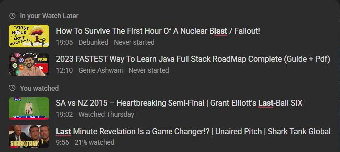

Guide 01·Watch history
How to search your YouTube watch history.
Updated 30 September 2026
Short answer
On a computer, open youtube.com/feed/history and use the Search watch history box. It finds videos you've watched by the words in them. It can't filter by channel, length or date, so for "that 20 minute video from last month" you need Google's My Activity, or Needle, which adds those filters and shows your history right in YouTube's search bar.
01·On YouTube
Search your history on YouTube
- Go to youtube.com/feed/history, or History in the left menu.
- Find the Search watch history box.
- Type a word you remember from the title.
Good when you remember the title. Less good when you remember it was about twenty minutes long, from a channel you'd never heard of, sometime in August. The box takes words and nothing else.
02·My Activity
Filter by date with Google My Activity
Google keeps the same history with dates attached. Open myactivity.google.com/product/youtube and use Filter by date to narrow it to a day or a range. You can search by keyword there too. It's slow to scroll, though, and it doesn't know how long a video is or whether you finished it.
03·With Needle
Search it by channel, length and date with Needle
Needle reads your history into your browser and makes it searchable the way you actually remember videos.
From the search bar
Type anything on YouTube and videos you've watched appear under You watched, with when you watched them and how far you got. Close spellings still match, so half a title is usually enough.

Add filters as you go:
in:history @veritasium | Everything you've watched from Veritasium |
watched:august <20m | Short videos you watched in August |
in:history is:started | Things you started and never finished |
watched:yesterday | Also today, week, last-week, month, or a month like 2026-08 |
On the History page
Press the needle button in the bottom right corner of your History page, or Alt+Y, for the full panel: filter by channel, length, views or when you watched it, and sort any way you like.
Going further back
Needle reads the first page of your history by default. Turn on Deep reading in the popup to go further. In one test it read 1,464 videos going back 68 days, and still hadn't run out. The privacy policy explains how it works.
04·Questions
Questions?
Why can't I find a video I know I watched?
Usually one of three things: you watched it signed out or in an incognito window, your history was paused at the time, or auto-delete has removed it. If none of those fit, it may be further back than what's been read, so turn on Deep reading.
Does Needle keep a copy of my history?
Only on your device, in the browser's own storage, so searching it is instant. It never leaves your computer, and Clear cached data in the popup wipes it.
Does it change my history?
No. Needle only reads. It never adds, removes or pauses anything in your YouTube account.
Is it free?
Yes. No account, no trial, no paid tier.